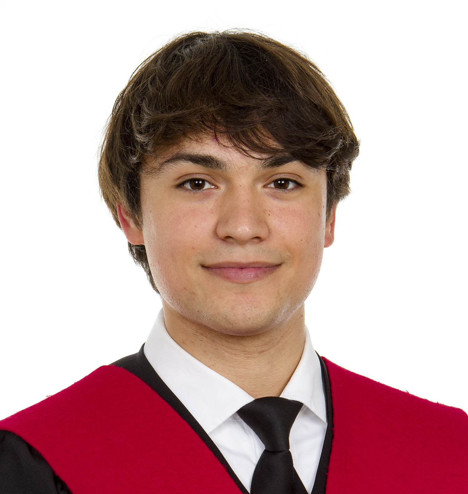

Audiovisual Systems Engineer
I've recently graduated in Audiovisual Systems Engineering from UPF, with a background that sits between audio, video and software. I like understanding how things work under the hood, and I'm looking for a team where I can keep doing that on real projects.
A one-page summary of everything on this site, including education, experience and skills.

About
I've recently graduated in Audiovisual Systems Engineering at UPF, a degree that mixes signal processing, video engineering, and software. I like both sides of it: the math behind a codec or an audio filter, and the more practical question of whether a mix or a shot actually sounds or looks right.
My thesis looks at how AI-generated music can be identified from the traces neural codecs leave behind, and how fragile those detection methods are once you try to attack them. I spent a year building a pipeline that defeats them without changing how the music sounds to a human listener. Alongside that, I've worked on computer vision, video processing, and, currently, Microsoft workplace tooling at Avanade, where I support internal systems used by international clients.
Outside of coursework I play guitar, produce music, watch a lot of film, and still play basketball, something I've done since I was six.
4
Years at UPF
3
Languages spoken
1
Bachelor's thesis
Junior/Graduate
Current Level
Technical competencies
Signal processing, audio production tools, and software development, the technical range behind the work below.
General-purpose programming across a few languages and frameworks, applied recently to university projects in signal processing and video coding.
Solid understanding of professional audio equipment, signal routing, and electroacoustics. Skilled in core signal processing theory, coding standards, and acoustic measurement alongside creative DAW environments.
Comprehensive knowledge of video equipment, compression standards, and processing pipeline engineering. Experienced in computer vision, image manipulation, and 3D computer graphics.
Hands-on use of version control, cloud platforms and enterprise tooling gained through academic projects and internship work at Avanade.
Creative interests & hobbies
Guitar
Playing in free time
Composition
DAW production
Cinema
Passion for film
Basketball
Playing since age 6
Research & development
My bachelor's thesis on audio forensics, plus a couple of personal tools I built out of curiosity for how sound and music actually work.
Author: Arnau Martin Riera · Advisor: Martín Rocamora
Context & problem statement
The rise of generative platforms like Suno and Udio enables the creation of high-fidelity songs virtually indistinguishable to the human ear. However, neural codec-based decoders (such as Encodec) leave structural fingerprints: so-called "fakeprints" — replicas of upsampling operations and strided deconvolutions within the underlying CNNs.
While statistical detectors based on linear regressions or shallow models achieve 100% accuracy under laboratory conditions, this research exposes their systemic fragility. Detectors do not learn the abstract concept of "real" versus "artificial" music; they memorize the metric rigidity and exact placement of spectral peaks unique to each specific generation network.
Mathematical foundation of the artifact
n · fs for integer bins n ∈ [0, ⌊k/2⌋]
In a deconvolution layer with stride k, zero-upsampling periodizes the spectrum, introducing narrow peaks at equidistant frequencies.
⌊Pmax/2⌋ + 1, where Pmax = ∏ k(i)
Chaining layers grows the maximum number of resulting spectral peaks recursively. Temporal averaging of the STFT across thousands of frames cancels this signature, exposing the source architecture.
Multiband degradation pipeline
As the primary contribution of this thesis, a post-processing pipeline was designed around the Overlap-Add (OLA) method combined with phase perturbations via millisecond block micro-shifts.
100 → 0%
Detector accuracy (Suno)
100 → 4%
Detector accuracy (Udio)
53.3%
Human success (chance)
3.82 / 5
Human Likert difficulty
Research conclusion
Results from a perceptual test with N = 20 listeners conclusively demonstrate that micro-timing alterations and phase decomposition are completely transparent to the human ear — opening a critical debate about the reliability of current spectral-architecture-based detectors against adversarial attacks.
Started as a quick vibe-coding experiment and grew into a full-stack tool for learning music production. It doesn't generate a finished track, it uses an LLM as a live tutor: you describe what you want in plain language, and it walks you through the synthesis, composition and rhythm decisions behind it, in the browser.
Sound Replicator
Describe a sound in plain English and it works backward to a synthesis patch, oscillators, ADSR, LFO routing, filters, rendered live with the Web Audio API.
Interactive Beat Maker & Chord Architect
Turns a text prompt into a full MIDI sequence played back on a step sequencer and piano roll, with a short breakdown of the music theory behind it.
Collaborative community
A social layer built with Prisma, Supabase and NextAuth, where producers share prompts and patches.
Built to properly understand synthesis from first principles; a compact, browser-based synthesizer that makes oscillators, envelopes and signal flow visible and tweakable in real time.
Native MIDI controller support
Allows users to map and plug in real external hardware directly into the browser pipeline.
University work
A selection of coursework spanning audiovisual systems, software engineering, and multimedia pipelines. Drag or use the arrows to browse.
Background & training
B.Eng. Audiovisual Systems Engineering
Universitat Pompeu Fabra
2022 – 2026 · Barcelona, Poblenou
Dual Baccalaureate
La Salle Montcada
2020 – 2022 · Equivalent to US High School Diploma + Baccalaureate
Technological Baccalaureate
La Salle Montcada
2020 – 2022 · Montcada i Reixac
ESO (Secondary Education)
La Salle Montcada
2016 – 2020 · Montcada i Reixac
Junior Analyst — Modern Workplace
Avanade · Barcelona
Jul 2026 – Present
Promoted into a full analyst role after my internship. I handle day-to-day ticket resolution within a Microsoft environment (M365 and Power Platform), working directly with international clients in English.
Modern Workplace & Optimization Intern
Avanade · Barcelona
Oct 2025 – Jun 2026
Worked with C#, JavaScript, and Power Apps to build and optimize internal digital solutions, gaining hands-on experience with Agile methodologies in a global enterprise environment.
Bartender
Costa Este – Shark Events · Barcelona
Jan – Aug 2025
Worked in a fast-paced events and hospitality environment, developing customer service, teamwork, and communication under pressure.
Private Tutor
Self-employed · Montcada i Reixac
Apr 2020 – Aug 2024
Provided private tutoring for over four years while studying, developing patience and the ability to explain complex concepts clearly.
Let's work together
If you've got an opportunity, a project, or just want to talk about audio, film or tech — send me a message.
Email · amartinriera@gmail.com
Phone · +34 670 054 307
Find me elsewhere